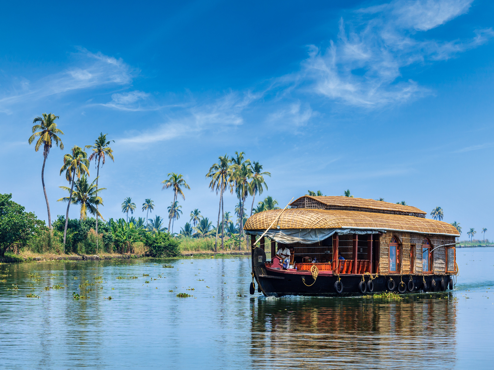
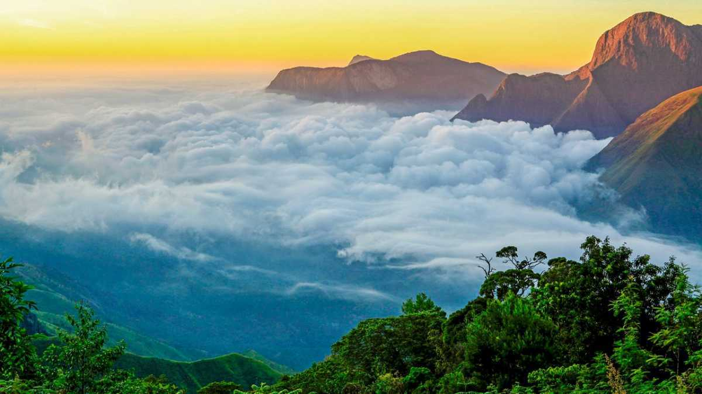
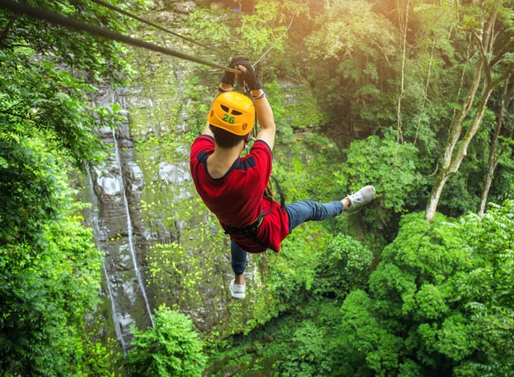
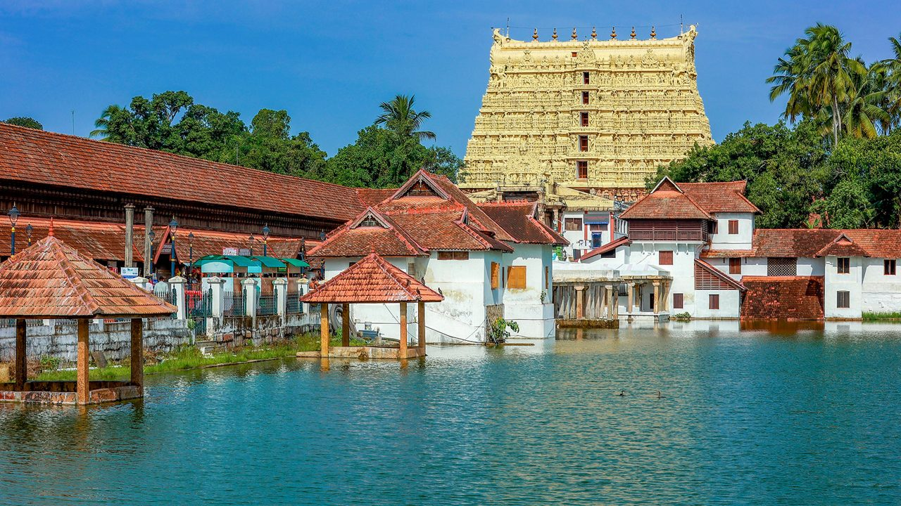

Kerala
Kochi

Kochi, known as the “Queen of the Arabian Sea,” is famous for Chinese fishing nets,
Mattancherry Palace, and Kerala backwaters.
- ⏰ Best Time: October – March
- 💰 Budget: ₹5,000 – ₹8,000 (3 days)
- 👨💼 Guide: City tour guides available
- 🌤️ Weather: Tropical, 22°C – 32°C
- 📍 Location: Ernakulam District, Kerala
Munnar

Munnar is a hill station famous for tea plantations, Anamudi Peak, Eravikulam National Park,
and beautiful valleys.
- ⏰ Best Time: September – March
- 💰 Budget: ₹5,000 – ₹9,000 (3 days)
- 👨💼 Guide: Optional
- 🌤️ Weather: Cool, 10°C – 25°C
- 📍 Location: Idukki District, Kerala
Alleppey (Alappuzha)

Alleppey is known for its backwaters, houseboats, snake boat races, and lush green villages,
making it the “Venice of the East.”
- ⏰ Best Time: November – February
- 💰 Budget: ₹4,000 – ₹7,000 (2 days)
- 👨💼 Guide: Not required
- 🌤️ Weather: Tropical, 20°C – 32°C
- 📍 Location: Alappuzha District, Kerala
Wayanad

Wayanad is a scenic district famous for waterfalls, wildlife sanctuaries,
Edakkal Caves, and spice plantations.
- ⏰ Best Time: October – May
- 💰 Budget: ₹5,000 – ₹8,000 (3 days)
- 👨💼 Guide: Available for trekking/caves
- 🌤️ Weather: Pleasant, 15°C – 28°C
- 📍 Location: Kerala, India
Thiruvananthapuram

The capital of Kerala, Thiruvananthapuram, is home to Padmanabhaswamy Temple,
Kovalam Beach, and a mix of tradition and modern culture.
- ⏰ Best Time: October – March
- 💰 Budget: ₹5,000 – ₹8,000 (2–3 days)
- 👨💼 Guide: Optional
- 🌤️ Weather: Tropical, 22°C – 32°C
- 📍 Location: Kerala, India